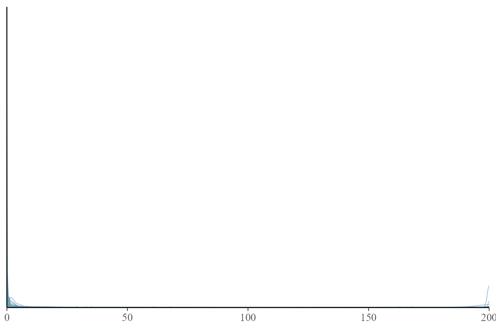
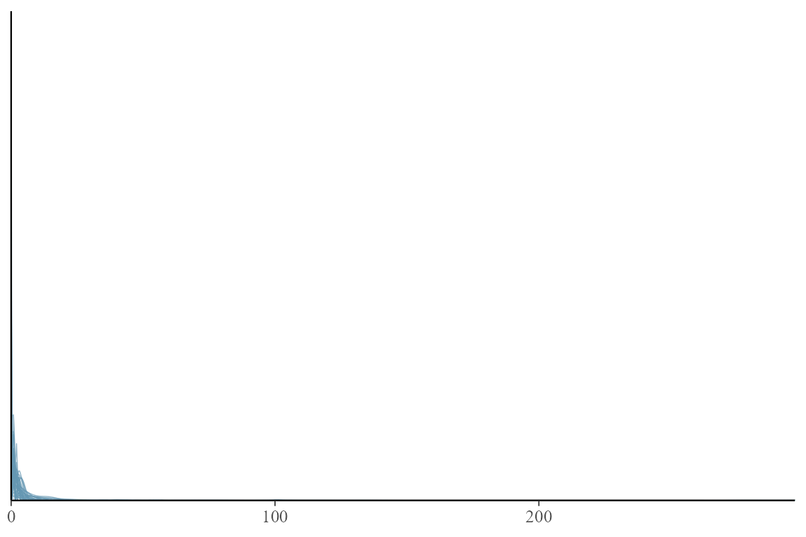
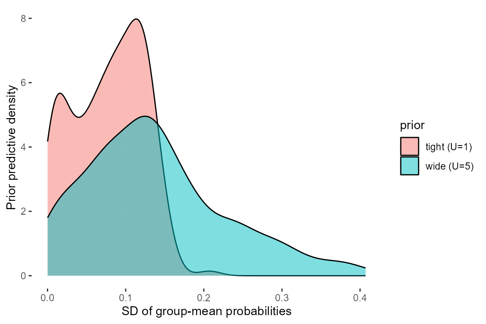

Why priors get their own object
Every Bayesian fit carries priors, whether you write them down or
not. tulpa keeps them in one place: a tulpa_priors object
that names a prior for each kind of parameter the engine knows about.
You build it with tulpa_priors(), fill the slots with
prior_*() constructors, and hand the result to the
functions that need it. The same object drives prior predictive
simulation, so the priors you check are the priors you fit with.
This vignette walks through the prior families, the defaults, how to move a fixed-effect prior and watch the posterior follow, and how to look at what a prior implies about the data before any of it touches the likelihood. The closing section turns that into a short set of working rules.
Three jobs run through the whole vignette, and it helps to name them
up front because the right prior depends on which one you are doing. A
fixed-effect coefficient lives on the link scale and can be any real
number, so it gets a prior over the whole line. A variance or scale
parameter is positive by construction, so it gets a prior on the
positive half-line and the question is how fast that prior decays toward
zero. A correlation or mixing proportion is trapped in the unit
interval, so it gets a prior on (0, 1) and the only real
decision is whether you lean it toward one end. tulpa gives you one
constructor family for each job, and tulpa_priors() keeps
one of each in a single object.
Prior families available
A prior in tulpa is a small tagged list built by one of seven constructors. Each one carries a distribution name and its parameters, and prints in a compact form. The seven cover three jobs: location parameters that range over the whole real line, scale parameters that must stay positive, and proportions bounded in the unit interval.
Location: the normal prior
prior_normal(mean, sd) is the workhorse for fixed
effects, which live on the link scale and can take either sign. The
default is prior_normal(0, 2.5).
prior_normal(0, 2.5)
#> Normal(0.00, 2.50)
prior_normal(0, 1)
#> Normal(0.00, 1.00)The mean sets where the prior is centred and the standard deviation sets how far it reaches. On a logit or log link, a standard deviation of 2.5 already covers a wide range of multiplicative effects, so this is weakly informative rather than flat.
The link scale is where this prior bites, and a few numbers make the
width concrete. On a log link a coefficient of 2.5 multiplies the rate
by exp(2.5), about 12-fold; two prior standard deviations
reach exp(5), near 150-fold. On a logit link a coefficient
of 2.5 is an odds ratio of about 12, and a slope of that size moves a
probability from 0.5 to roughly 0.92 over one unit of a standardised
predictor. So prior_normal(0, 2.5) is genuinely permissive:
it expects most effects to be modest but does not rule out large ones.
Tightening to prior_normal(0, 1) says you would be
surprised by an odds ratio past about 7, which is a defensible statement
for a standardised covariate where a unit is one standard deviation of
the data. The mean is rarely worth moving away from zero unless you have
an external estimate to centre on; the standard deviation is the knob
you actually turn.
Scale: priors for standard deviations
Random-effect standard deviations, dispersion parameters, and any other positive quantity need a prior with support on the positive half-line. tulpa offers four.
prior_half_normal(1)
#> Half-Normal(1.00)
prior_half_cauchy(2.5)
#> Half-Cauchy(2.50)
prior_gamma(2, 0.1)
#> Gamma(2.00, 0.10) [mean = 20.00]
prior_exponential(1)
#> Exponential(1.00) [mean = 1.00]prior_half_normal(sd) folds a mean-zero normal at the
origin: light tails, firm shrinkage toward small values.
prior_half_cauchy(scale) has the same mode at zero but much
heavier tails, so it tolerates the occasional large standard deviation
that a half-normal would fight. The half-Cauchy is a common default for
variance parameters precisely because it stays gentle in the tail.
prior_gamma(shape, rate) is the flexible positive prior.
Its mean is shape / rate and its variance is
shape / rate^2, both printed alongside the parameters. With
shape = 2, rate = 0.1 the mean sits at 20, a deliberately
loose prior for a quantity you expect to be large.
prior_exponential(rate) is the one-parameter special case
(a gamma with shape = 1); its mean is
1 / rate.
The four positive priors differ in two ways that matter at fit time:
their behaviour near zero and the weight of their right tail. The
half-normal, exponential, and PC priors all put their mode at zero, so
they shrink a scale parameter toward switching off. The half-Cauchy
shares the mode at zero but carries a polynomial tail that never decays
as fast as a normal’s, so it tolerates a large standard deviation when
the data demand one. The gamma is the odd one out: with
shape > 1 its density is zero at the origin and rises to
an interior mode, so it actively pulls a parameter away from zero, which
is what you want for a dispersion you know is bounded above the Poisson
limit but not for a random-effect variance you would happily let vanish.
The rule of thumb is to reserve the gamma for parameters you expect to
be clearly positive and use a mode-at-zero prior whenever switching the
component off is a live possibility.
c(half_normal_mean = prior_half_normal(1)$sd * sqrt(2 / pi),
exponential_mean = 1 / prior_exponential(1)$rate,
gamma_mean = prior_gamma(2, 0.1)$shape / prior_gamma(2, 0.1)$rate)
#> half_normal_mean exponential_mean gamma_mean
#> 0.7978846 1.0000000 20.0000000The PC prior
prior_pc(U, alpha) builds a penalised-complexity prior,
the recommended choice for variance components. You give it a value
U you would consider large and a small tail probability
alpha, and it encodes the statement
P(parameter > U) = alpha.
prior_pc(U = 1, alpha = 0.01)
#> PC prior: P(x > 1.00) = 0.010
#> => Exponential(4.605)
prior_pc(U = 0.5, alpha = 0.05)
#> PC prior: P(x > 0.50) = 0.050
#> => Exponential(5.991)The print-out shows both the readable statement and the exponential
it reduces to: the rate is -log(alpha) / U. The
penalised-complexity idea, from Simpson et al. (2017), treats a model
component as a deviation from a simpler base model (here, a standard
deviation of zero, meaning the component switches off). The prior puts
an exponential penalty on the distance from that base model on a natural
scale, which translates to an exponential prior on the standard
deviation. Two properties follow. The prior shrinks toward the simpler
model unless the data pull it away, and its single tuning knob is a tail
probability you can reason about directly. Saying “a standard deviation
above 1 should happen one percent of the time” is easier to defend than
picking gamma shape and rate by feel.
The shrinkage matters most when groups are few. A handful of groups carry little information about their shared variance, and a flat or heavy prior on that variance lets the random effect overfit, soaking up noise that belongs in the residual. A PC prior leans the other way by default, switching the component off unless the groups disagree enough to keep it on. That is the behaviour you want from a regulariser: invisible when the data speak, firm when they do not.
The tail-probability framing is what makes the PC prior easy to set.
The rate is -log(alpha) / U, so for
P(sigma > 1) = 0.01 the rate is about 4.6, and the
implied prior median sits near 0.69 / 4.6, around 0.15.
That is a small standard deviation on a link scale, which is the
intended default: it expects group-to-group spread to be modest and asks
the data to argue for more. Moving U rescales the whole
prior linearly, so a PC prior with U = 5, alpha = 0.01 is
just the U = 1 prior stretched fivefold and suits a setting
where group effects of several link-scale units are plausible.
The cleanest way to see what a PC prior on sigma
actually implies is to push it through the data scale with a prior
predictive draw of a grouped model. Set up a small grouped frame on a
logit link and a Bernoulli simulator, then draw the group spread from
two PC priors of different width.
bin <- tulpa_family("binomial",
function(eta, params, n_obs, ...) rbinom(n_obs, 1, plogis(eta[[1]])))
gdat <- data.frame(y = 0, x = rnorm(200), g = factor(rep(1:20, each = 10)))prior_predict() reads the (1 | g) term,
draws sigma from priors$sigma, and uses it to
generate the group intercepts that enter the linear predictor. Summarise
each draw by the spread of group-level mean probabilities, which is what
a too-wide sigma prior inflates.
group_spread <- function(pp) {
vapply(seq_along(pp$y), function(d) {
p <- plogis(pp$linpred[[d]][[1]])
sd(tapply(p, gdat$g, mean))
}, numeric(1))
}
pp_tight <- prior_predict(y ~ x + (1 | g), family = bin, data = gdat,
n_draws = 200, priors = tulpa_priors(sigma = prior_pc(1, 0.01)), seed = 7)
pp_wide <- prior_predict(y ~ x + (1 | g), family = bin, data = gdat,
n_draws = 200, priors = tulpa_priors(sigma = prior_pc(5, 0.01)), seed = 7)
rbind(tight = quantile(group_spread(pp_tight), c(0.5, 0.9, 0.99)),
wide = quantile(group_spread(pp_wide), c(0.5, 0.9, 0.99)))
#> 50% 90% 99%
#> tight 0.08188838 0.1307099 0.1557274
#> wide 0.12642536 0.2664106 0.3764848Under the tight default the between-group spread of probabilities stays small; under the wide prior the upper draws scatter group means across most of the unit interval before any data are seen. If you believe groups differ that strongly, the wide prior is honest; if you do not, the default PC prior keeps the prior predictive in a believable band and lets the groups earn their variance.
Proportions: the beta prior
prior_beta(alpha, beta) covers parameters bounded in
(0, 1), such as an AR(1) correlation rescaled to the unit
interval or the BYM2 mixing proportion.
prior_beta(1, 1)
#> Beta(1.00, 1.00) [mean = 0.50]
prior_beta(2, 2)
#> Beta(2.00, 2.00) [mean = 0.50]
prior_beta(5, 2)
#> Beta(5.00, 2.00) [mean = 0.71]prior_beta(1, 1) is uniform on the interval.
prior_beta(2, 2) is symmetric and peaked at 0.5. Pushing
the first shape above the second, as in prior_beta(5, 2),
tilts the mass toward 1, which suits a parameter you believe is high
(strong temporal autocorrelation, say). The printed mean,
alpha / (alpha + beta), gives a quick read on where the
prior sits.
What each family is for
A short map from parameter to natural prior family:
| Parameter | Lives on | Natural priors |
|---|---|---|
Fixed effects (beta) |
whole real line | prior_normal() |
Random-effect SD (sigma) |
positive |
prior_pc(), prior_half_normal(),
prior_half_cauchy()
|
Dispersion / precision (phi) |
positive |
prior_pc(), prior_gamma(),
prior_exponential()
|
Temporal AR(1) (rho_temporal) |
(0, 1) |
prior_beta() |
Spatial mixing (rho_spatial) |
(0, 1) |
prior_beta() |
Matching a positive prior to a positive parameter is on you: the constructors accept any combination, so the table is the convention to follow rather than a rule the code checks. A normal prior paired with a standard deviation slot will build without complaint and then misbehave at fit time, so treat the support of each parameter as the first thing to get right.
Three classes of parameter, three kinds of prior
The table above sorts priors by the slot they fill, but the deeper division is by what the parameter does in the model, because that determines how much the prior should be allowed to say.
Fixed effects sit in the linear predictor and the data usually identify them well once you have a few dozen informative rows. The prior on them is regularisation: a backstop for thin data or collinear predictors, not a structural assumption. A wide normal is the right default precisely because you want the likelihood to win whenever it can.
Variance and scale components are different. They are weakly identified by construction, especially when the grouping factor has few levels or the responses are binary, so the prior carries real weight in the posterior and keeps doing so as the data grow until the number of groups grows with them. A PC prior is the recommended default here because it states its strength as a tail probability and shrinks toward the simpler model, which is the safe direction when the data underdetermine the variance. The half-Cauchy is the fallback when you expect a genuinely large component that the PC penalty would fight.
Spatial and temporal hyperparameters are the most weakly identified
of all. A single realisation of a spatial field or a time series carries
little information about its range or its autocorrelation, so the prior
often shapes the posterior more than the data do. The
rho_temporal and rho_spatial slots take beta
priors on (0, 1): the default prior_beta(2, 2)
on temporal correlation is symmetric and pulls gently off the endpoints,
where an AR(1) process is hard to estimate, and the default
prior_beta(1, 1) on the BYM2 mixing proportion stays flat
because there is rarely prior reason to favour structured over
unstructured variation. SPDE and Matern range parameters live on the
positive half-line and take PC priors of the same kind as a variance
component, set from a range you would call large for your study region.
The engine assembles these structured priors from a latent specification
through prior_from_spec(), which reads a
tulpa_temporal or tulpa_spatial object and
returns the matching prior, so the structured paths and the manual
constructors stay in step.
Default priors
tulpa_priors() with no arguments returns the package
defaults. Print it to see all five slots at once.
tulpa_priors()
#> tulpa prior specification
#> =========================
#>
#> Fixed effects (beta):
#> Normal(0.00, 2.50)
#>
#> Random effect SD (sigma):
#> PC prior: P(x > 1.00) = 0.010
#> => Exponential(4.605)
#>
#> Overdispersion (phi):
#> PC prior: P(x > 10.00) = 0.010
#> => Exponential(0.461)
#>
#> Temporal autocorrelation (rho_temporal):
#> Beta(2.00, 2.00) [mean = 0.50]
#>
#> Spatial proportion (rho_spatial):
#> Beta(1.00, 1.00) [mean = 0.50]The defaults read as follows. Fixed effects get
prior_normal(0, 2.5), wide enough to let coefficients roam
across the plausible link-scale range without being flat. Random-effect
standard deviations get a PC prior with
P(sigma > 1) = 0.01, which favours smaller variance
components and guards against the variance running off when groups are
few. The dispersion phi gets a PC prior with
P(phi > 10) = 0.01. Temporal correlation defaults to
prior_beta(2, 2), symmetric around 0.5, and the spatial
mixing proportion to prior_beta(1, 1), a flat unit prior
with no lean toward structured or unstructured variation.
priors_default() prints the same defaults with a
sentence of interpretation and the customisation entry point for each
slot.
priors_default()
#> Default priors for tulpa models
#> ================================
#>
#> These defaults apply to all families unless overridden.
#>
#> Fixed effects (beta):
#> Normal(0, 2.5)
#> Interpretation: Coefficients roughly in [-5, 5] on link scale
#> Customization: prior_normal(mean, sd)
#>
#> Random effect SD (sigma):
#> PC prior: P(sigma > 1) = 0.01
#> Interpretation: Favors smaller variance components
#> Customization: prior_pc(U, alpha) or prior_half_normal(sd)
#>
#> Overdispersion (phi) [negbin/poisson_gamma only]:
#> PC prior: P(phi > 10) = 0.01
#> Interpretation: NB2 size; keeps phi finite (allows overdispersion),
#> phi -> Inf is the Poisson limit
#> Customization: prior_pc(U, alpha) or prior_gamma(shape, rate)
#>
#> Family-specific notes:
#> negbin_negbin: Uses phi for both processes
#> binomial: No overdispersion parameter (unless beta_binomial)
#> poisson_gamma: Uses phi for gamma shape parameterChange one slot by naming it; the rest stay at their defaults.
tulpa_priors(
beta = prior_normal(0, 1),
sigma = prior_pc(U = 0.5, alpha = 0.01)
)
#> tulpa prior specification
#> =========================
#>
#> Fixed effects (beta):
#> Normal(0.00, 1.00)
#>
#> Random effect SD (sigma):
#> PC prior: P(x > 0.50) = 0.010
#> => Exponential(9.210)
#>
#> Overdispersion (phi):
#> PC prior: P(x > 10.00) = 0.010
#> => Exponential(0.461)
#>
#> Temporal autocorrelation (rho_temporal):
#> Beta(2.00, 2.00) [mean = 0.50]
#>
#> Spatial proportion (rho_spatial):
#> Beta(1.00, 1.00) [mean = 0.50]Because each slot validates its argument, passing something that is
not a tulpa_prior object fails early with a clear message
rather than surfacing deep inside a fit.
The five defaults are deliberately conservative.
prior_normal(0, 2.5) on fixed effects keeps coefficients
roughly in the link-scale band [-5, 5] without going flat.
The PC prior P(sigma > 1) = 0.01 on random-effect
standard deviations favours small variance components and protects
against the variance running away when groups are few. The PC prior
P(phi > 10) = 0.01 on the dispersion regularises toward
the Poisson limit. The two beta priors stay neutral on the correlation
parameters. Those choices are right for a first fit on a healthy
dataset, and the cases for overriding them are specific: a strong
external estimate to centre a fixed effect on, a variance you expect to
be large enough that the default PC prior would over-shrink, a
dispersion you can bound tightly from prior counts, or a temporal
correlation you have reason to believe is high. Absent one of those, the
defaults are the place to start.
priors_default() also takes a family
argument. Pass a tulpa_family object from a model package
and it prints only the slots that family uses, with a note on what each
parameter means for that likelihood, which is the quick way to check
whether a family even has a dispersion or a temporal slot before you try
to set it.
These five slots cover the direct / conditioning paths and the
ModelData samplers. Two backends sit outside them and follow a different
convention. The nested-Laplace integrator’s own scale axes
(icar, rw1, rw2,
ar1’s tau, iid) carry no
hyperprior at all: the grid is uniform in log(theta) and
the outer weights are a plain softmax of the log marginal, so the
effective prior is flat in log-scale, everywhere, by construction of the
integration rather than by a tulpa_priors() slot.
[tulpa_re_cov_nested()] and [tulpa_eb()] match that convention by
default (hyperprior = "flat"); pass
hyperprior = "pc_lkj" to opt into the PC + LKJ prior these
two functions can also build via [re_cov_pc_lkj_prior()].
[tulpa_re_cov_gibbs()] cannot go fully flat – its Sigma | b
step is a conjugate Inverse-Wishart draw, which needs a proper prior to
sample from – so it defaults to the weakest proper choice
(prior_df = n_coefs + 1) instead.
Priors on fixed effects
The engine’s Laplace path takes a Gaussian prior on the fixed effects
through the beta_prior argument of tulpa(),
written as list(mean =, sd =). The sd is
required; mean defaults to 0. Each may be a scalar applied
to every coefficient or a vector with one entry per coefficient. Leaving
beta_prior at NULL keeps a weak built-in prior
that barely moves the fit.
A prior earns its keep when the data are thin. Simulate a small Gaussian dataset with a slope of 1.2, the kind of sample where the likelihood alone leaves real uncertainty.
n <- 25
x <- rnorm(n)
y <- 0.5 + 1.2 * x + rnorm(n, sd = 1.5)
df <- data.frame(y = y, x = x)Fit it once with the default weak prior. The slope estimate is driven by the likelihood.
fit_weak <- tulpa(y ~ x, data = df, family = "gaussian",
mode = "laplace", phi = 1.5^2)
coef(fit_weak)
#> (Intercept) x
#> 0.5898086 1.4185493Now impose a tight prior that says the slope is near zero: mean 0 and a small standard deviation. The intercept keeps a loose prior, so only the slope is pulled.
fit_tight <- tulpa(y ~ x, data = df, family = "gaussian",
mode = "laplace", phi = 1.5^2,
beta_prior = list(mean = c(0, 0), sd = c(10, 0.2)))
coef(fit_tight)
#> (Intercept) x
#> 0.7566181 0.2777332The slope under the tight prior sits well below its weakly informed value: the prior at zero and the likelihood at the data strike a compromise, and the small prior standard deviation gives the prior most of the weight. Put the two fits side by side.
data.frame(
term = names(coef(fit_weak)),
weak = round(coef(fit_weak), 3),
tight = round(coef(fit_tight), 3)
)
#> term weak tight
#> (Intercept) (Intercept) 0.590 0.757
#> x x 1.419 0.278This is regularisation made explicit. Shrinking a coefficient toward a value accepts a little bias in exchange for lower variance, which is worth doing when the data cannot pin the coefficient down on their own. The credible intervals tell the same story from the uncertainty side.
confint(fit_weak)["x", ]
#> 2.5% 97.5%
#> 0.6240249 2.2130736
confint(fit_tight)["x", ]
#> 2.5% 97.5%
#> -0.07380275 0.62926923The tight prior narrows the slope’s interval and shifts it toward
zero. A vector sd lets you regularise some coefficients
hard while leaving others free, which is the usual pattern: pin nuisance
terms, let the effects of interest follow the data.
The amount of movement is set by the ratio of prior to likelihood
information, which on this Gaussian fit has a closed form worth carrying
in your head. For a single coefficient the posterior mean is a
precision-weighted average of the prior mean and the least-squares
estimate, with weights 1 / sd_prior^2 and
1 / se_mle^2. When the prior standard deviation is much
larger than the coefficient’s standard error the likelihood dominates
and the prior is nearly invisible; when it is much smaller the prior
wins and the estimate sits near the prior mean. The slope’s standard
error here is on the order of the residual standard deviation over
sqrt(n) times the predictor spread, a few tenths, so a
prior standard deviation of 0.2 is comparable to the data’s own
precision and the two split the difference, which is what the table
shows. Setting a vector sd is then a per-coefficient choice
of where on that continuum to sit.
The fixed-effect prior threads through the plain Laplace and sampler
paths. Some structured paths (spatial fields, the SPDE integrator) carry
their own built-in fixed-effect prior and will tell you so if you pass
beta_prior there.
Prior predictive checks
A prior is a statement about parameters, but its consequences land on the data scale, often somewhere surprising. A prior that looks mild on a log link can imply counts in the millions. The way to catch this is a prior predictive check: draw parameters from the priors, push them through the linear predictor, simulate responses, and look at the responses.
prior_predict() does the drawing. It needs a formula, a
tulpa_family that supplies a simulator, the data (for its
design and dimensions, not its response), and the priors. The family is
a thin object built by tulpa_family(): a name plus a
simulate_fn(eta, params, n_obs, ...) that turns a linear
predictor into a response. Build a Poisson family whose simulator
exponentiates the linear predictor.
pois <- tulpa_family(
name = "poisson",
simulate_fn = function(eta, params, n_obs, ...) rpois(n_obs, exp(eta[[1]]))
)Use a small covariate frame; the response column can be a placeholder because the priors generate the response.
dat <- data.frame(y = rep(0, 60), x = rnorm(60))Draw from a deliberately vague prior on the fixed effects. A standard deviation of 5 on a log link is enormous: it lets the intercept and slope wander far enough to produce astronomically large counts.
pp_vague <- prior_predict(
y ~ x, family = pois, data = dat, n_draws = 200,
priors = tulpa_priors(beta = prior_normal(0, 5)), seed = 1
)
pp_vague
#> tulpa prior predictive draws
#> ============================
#> Family: poisson
#> Processes: y
#> Draws: 200
#> Obs: 60The returned object holds one simulated dataset per draw in
pp_vague$y. Look at the largest count any draw
produced.
That number is far past anything a real count process would produce. The prior is too vague: it places real mass on data the model should consider impossible. Tighten the fixed-effect prior to a standard deviation of 1 and redraw.
pp_ok <- prior_predict(
y ~ x, family = pois, data = dat, n_draws = 200,
priors = tulpa_priors(beta = prior_normal(0, 1)), seed = 1
)
max(vapply(pp_ok$y, max, numeric(1)))
#> [1] 757The largest simulated count now sits in a range a count model can take seriously. Quantiles across all draws sharpen the contrast.
vague_all <- unlist(pp_vague$y)
ok_all <- unlist(pp_ok$y)
rbind(
vague = quantile(vague_all, c(0.5, 0.9, 0.99)),
sensible = quantile(ok_all, c(0.5, 0.9, 0.99))
)
#> 50% 90% 99%
#> vague 1 5471.2 141786616
#> sensible 1 5.0 26The median is modest under both priors, but the upper tail under the vague prior is orders of magnitude heavier. The vague prior sits at the right centre and fails on its width: the damage hides in the tail, where a glance at the median would miss it entirely.
plot() overlays the simulated datasets so you can see
the spread directly. Capping the counts keeps the vague-prior plot
readable, since a handful of draws would otherwise stretch the axis past
everything else.
pp_capped <- pp_vague
pp_capped$y <- lapply(pp_vague$y, function(yi) pmin(yi, 200))
plot(pp_capped, max_draws = 40)
plot(pp_ok, max_draws = 40)
The sensible-prior draws cluster in a believable band; the
vague-prior draws, even capped, spread across the full range. Reading
the $y numbers and the overlay together is the check: if
the prior predictive covers values the response could never take, the
prior is too vague, and the families above let you pull it in. The same
machinery extends to any family by swapping the
simulate_fn, and to random-effect spread by setting the
sigma prior, which prior_predict() draws and
feeds into the group effects.
The PC-prior example earlier produced exactly that kind of
random-effect spread, and plotting the two group_spread
distributions side by side shows the prior’s effect at a glance. The
wide PC prior pushes a long right tail onto the between-group spread;
the tight default keeps it compact.
library(ggplot2)
sp <- rbind(
data.frame(prior = "tight (U=1)", spread = group_spread(pp_tight)),
data.frame(prior = "wide (U=5)", spread = group_spread(pp_wide)))
ggplot(sp, aes(spread, fill = prior)) +
geom_density(alpha = 0.5) +
labs(x = "SD of group-mean probabilities", y = "Prior predictive density") +
theme(panel.background = element_rect(fill = "transparent"),
plot.background = element_rect(fill = "transparent"))
Reading this plot is the variance-component analogue of the count check: the question is whether the spread the prior expects between groups matches what you would believe before seeing the data, and the wide prior’s mass near the right edge of the unit interval is the warning sign.
Choosing priors
A working order of operations for setting priors in tulpa:
Start from the defaults and change what you have reason to change.
tulpa_priors()is weakly informative across the board: a wide normal on fixed effects, PC priors that shrink variance components, symmetric priors on correlations. For a first fit on a healthy dataset, the defaults are a reasonable place to stand.Reach for PC priors on variance components.
prior_pc(U, alpha)lets you state the prior as a tail probability, which is the parameter you can defend in a methods section. SetUto a standard deviation you would call large on the link scale andalphato a small probability of exceeding it. When you expect the occasional genuinely large standard deviation, reach forprior_half_cauchy(): its heavier tail tolerates that case where the firm PC penalty would fight it.Make fixed-effect priors carry weight only when the data are thin. With hundreds of informative rows the likelihood dominates and
beta_priorbarely moves the fit, but with few rows, a poorly separated predictor, or a coefficient you want to regularise, a tightbeta_priorbecomes the lever the worked example demonstrated, and a vectorsdlets you pull selected coefficients hard while leaving the rest free.Run a prior predictive check before trusting a prior on the link scale. Link-scale intuition is unreliable. A standard deviation that feels mild can imply impossible data once exponentiated, and the failure shows up in the upper tail rather than the centre, so a summary mean will not warn you.
prior_predict()plus a one-linetulpa_family()simulator turns the question into numbers you can read off$yand an overlay you can scan; tighten until the simulated data look like data the process could produce.Match the prior family to the parameter’s support. Normal for the real line, a positive prior (PC, half-normal, half-Cauchy, gamma, exponential) for standard deviations and dispersions, beta for proportions; the constructors accept any pairing, so a normal on a variance slot will build cleanly and then bite at fit time. The map in the families section is the safe default to copy.
Keep the prior object you checked. A single
tulpa_priorsobject feeds bothprior_predict()and the fit, so a prior that survives the predictive check is the prior you go on to fit with, with no second specification drifting out of sync behind it.
Numbers to start from
Concrete defaults are easier to adjust than blank slots. Standardise continuous predictors to unit standard deviation first; every scale below assumes a unit predictor and a link-scale coefficient.
Fixed effects on a logit or log link.
prior_normal(0, 1.5)toprior_normal(0, 2.5). A standard deviation of 1.5 expects odds ratios or rate ratios mostly under about 4.5 per unit; 2.5 stretches that to about 12. Drop towardprior_normal(0, 1)when predictors are collinear or the sample is under a few dozen rows. Go wider than 2.5 only with a reason, because the prior predictive starts to admit impossible data past there.Fixed effects on an identity link. Match the standard deviation to the response scale: a few times the response’s own standard deviation is weakly informative, less than that begins to regularise.
Random-effect standard deviations.
prior_pc(U, alpha)withUa spread you would call large between groups on the link scale andalpha = 0.01. On a logit linkU = 1is already a wide spread of group probabilities, so the default rarely needs raising unless groups genuinely differ by several units; with under about eight groups, lean tighter rather than looser.Dispersion.
prior_pc(U = 10, alpha = 0.01)regularises a negative- binomial size toward the Poisson limit. Useprior_gamma()with an interior mode only when you can bound the dispersion away from both zero and infinity.Correlations and mixing proportions.
prior_beta(2, 2)when you want to stay off the endpoints,prior_beta(1, 1)when you have no lean, and a skewed beta such asprior_beta(5, 2)only when you can name the direction.
A prior predictive draw is the final arbiter for any of these: if simulated data look like data the process could produce, the scale is in range.
See also
?tulpa_priors,?prior_normal,?prior_pcand the otherprior_*constructor pages.?prior_predictand?tulpa_familyfor prior predictive simulation.The getting-started vignette for fitting, prediction, and model comparison.
Simpson, D., Rue, H., Riebler, A., Martins, T. G., & Sorbye, S. H. (2017). Penalising model component complexity. Statistical Science, 32(1), 1-28.